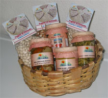

{% extends "base.html" %}
{% block title %}
Viaggiare nel Parco Nazionale del Pollino... portando a casa i suoi sapori, odori e colori
{% endblock %}
{% block body %}
PRODOTTI DI STAGIONE DISPONIBILI
More
Lamponi
Pomodori da insalata e per salsa
Melanzane
Melanzane rosse
Peperoni
Zucchine
Fagioli in granella freschi
Fagiolini in baccello o "cornetti"
Fiori di Zucca
Mais

Cestino di prodotti tipici
Un assortimento di prodotti tipici del Pollino, una raccolta di sapori
{% endblock %}
{% block right %}
INFO ACQUISTI
Per acquisti scrivere a
ContattiTelefono
0973.669290 -
347.2631462
Ore ufficio dalle 14 alle 20
{% endblock %}